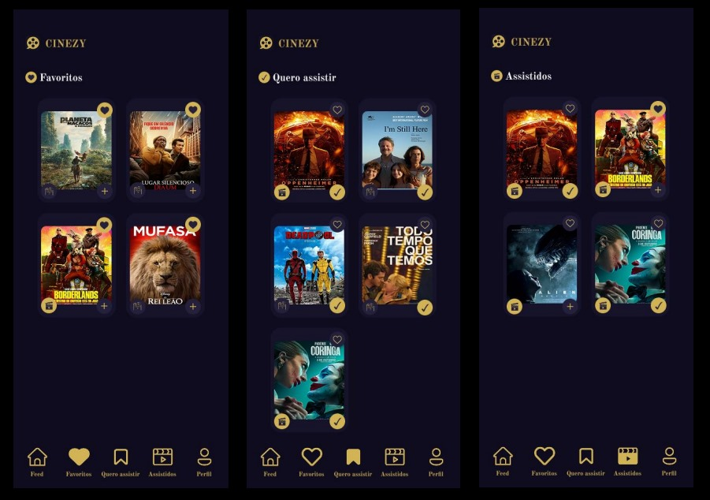

Cinezy: Sua Paixão por Filmes e Séries, Finalmente Organizada.
Descubra novos títulos, gerencie suas listas e nunca mais perca uma indicação. Simples, intuitivo e feito para você.
Chega de Listas Perdidas e Indecisão!
A Frustração de Antes
Anotações espalhadas, indicações esquecidas, horas navegando sem rumo... Encontrar e organizar o que assistir era um desafio?
A Solução com Cinezy
Com o Cinezy, você centraliza tudo! Crie suas listas de "Favoritos", "Quero Assistir" e "Assistidos" com poucos cliques e tenha seu universo cinematográfico na palma da mão.
Explore o Cinezy
Descubra com o Feed
Navegue por um feed vibrante e encontre os filmes e séries mais recentes e populares, além de clássicos imperdíveis.
Organize Suas Listas
Adicione aos "Favoritos", monte sua lista de "Quero Assistir" e registre o que já foi "Assistido". Tudo simples e visual.
Informações Detalhadas
Acesse sinopses, duração e outros detalhes importantes de cada título para fazer a escolha perfeita.
Seu Perfil, Suas Preferências
Gerencie seus dados de forma fácil e segura. O Cinezy foi feito para ser a sua cara.